0
Current CGPA / 4.00
Final-year Computer Science student specializing in Artificial Intelligence and Data Science, with enterprise IT operations experience at OCBC Bank Headquarters and a track record of building full-stack AI-powered systems. I build practical AI products that connect machine learning, data pipelines, backtesting discipline, and human-readable interfaces.
01 / About Me
A concise profile of my technical direction, project strengths, and the engineering mindset I bring to applied AI, data systems, and production-aware software development.
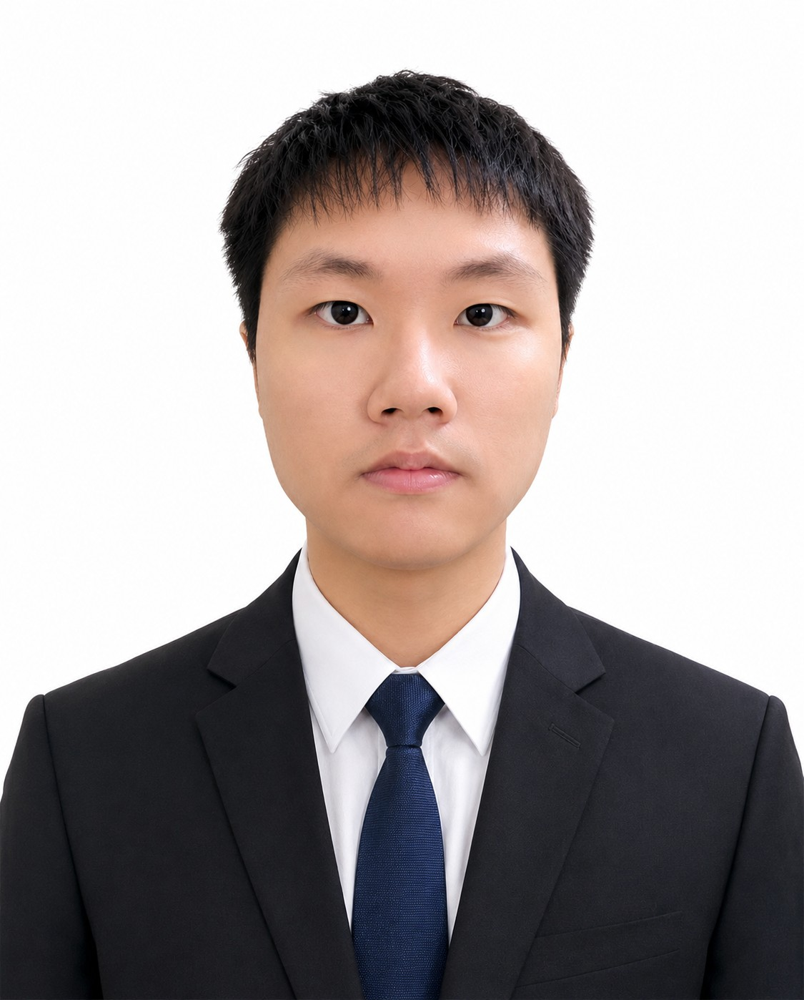
I am a Bachelor of Computer Science (Honours) student at Universiti Tunku Abdul Rahman, focused on Artificial Intelligence, Data Science, and full-stack software engineering. My work sits at the intersection of machine learning, financial technology, backtesting systems, and user-facing analytical interfaces.
My strongest current project is QuantForge Pro, an AI-assisted stock and cryptocurrency analytical platform designed to help retail users move from market observation to more disciplined strategy validation. I care about building systems that are not only visually polished, but also explainable, testable, and honest about execution assumptions.
As a graduate AI engineer candidate, I want to contribute to teams building practical AI products, data-driven decision systems, LLM-integrated workflows, and production-aware software platforms. I bring a mix of AI learning, hands-on project execution, enterprise IT exposure, and a strong habit of improving technical quality step by step.
02 / Professional Signal
My background combines AI engineering coursework, final-year product architecture, enterprise IT support, retail customer engagement, and hands-on operations work. That mix matters: AI engineers need more than models. They need secure systems, reliable data paths, clear debugging habits, user empathy, and responsible deployment thinking.
Designed and built an AI-assisted quantitative backtesting platform that connects historical market data, strategy configuration, sandbox simulation, audit verification, and comparative run management. The project focuses on realistic backtesting discipline, including close-of-bar decision logic, next-bar-open execution, slippage and commission awareness, risk metrics, and interpretable result evidence.
Delivered Tier 1 and Tier 2 troubleshooting across hardware, software, network, domain integration, and endpoint deployments. Supported high-availability banking operations, handled Network Access Control through ForeScout, and contributed to IT asset audit analytics using Microsoft Power Apps and Excel dashboards.
Promoted signature gift and retail products in a fast-paced customer-facing environment. Engaged walk-in customers, explained product features clearly, supported daily sales targets, and helped maintain organized product displays, stock visibility, and a welcoming shopping experience during peak commercial periods.
Consulted retail customers on organic health products by understanding basic dietary needs, explaining product benefits, and recommending suitable options. Supported product education, customer trust building, inventory monitoring, stock replenishment, and well-organized in-store product displays.
Operated and maintained manual milling machines for precision metal fabrication. Assisted with technical drawing interpretation and translation into machining operations, developing attention to detail, safety awareness, and a practical understanding of manual manufacturing workflows.
03 / Featured Build
QuantForge Pro is my strongest technical project because it forces software engineering, AI integration, financial data discipline, and product design to work together. The design goal is simple: help users avoid blind prediction and evaluate strategy quality through evidence.
A cross-platform analytical system for retail investors and beginner traders. It integrates historical market data retrieval, feature preparation, AI-assisted sentiment and contextual support, strategy configuration, sandbox backtesting, audit-aware verification, and research workflow persistence.
The platform treats forecasting as one input inside a broader workflow of execution simulation, risk evaluation, verification, and result interpretation.
Signals are generated using available bar information and executed later, reducing ambiguity and strengthening backtest validity.
Built classification models using Random Forest and XGBoost with feature engineering and evaluation through F1 Score, Precision, and Recall.
04 / Demo Evidence
Selected interface evidence from my technical projects, showing how the systems support data analysis, model evaluation, backtesting workflow, and user-facing decision support.
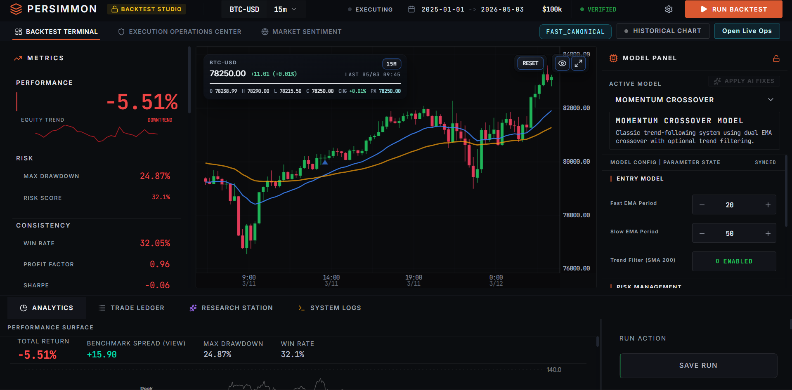
Shows the full analytical workspace, including charting, strategy context, configuration controls, and technical visual hierarchy.
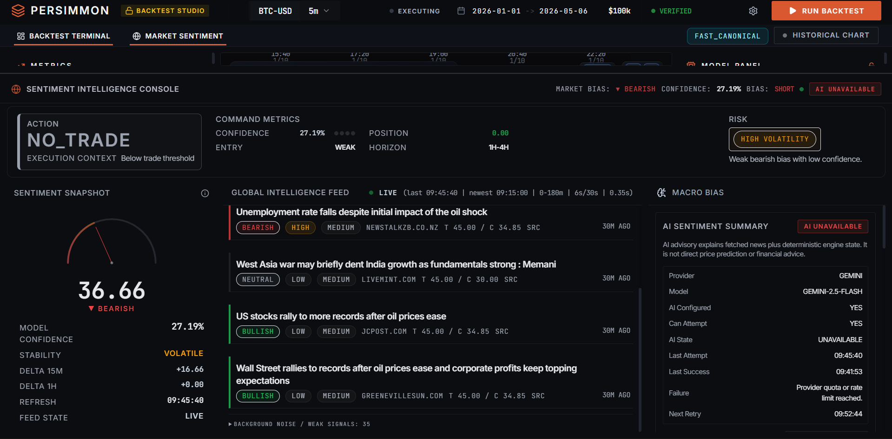
Shows the sentiment intelligence layer: market news is converted into bullish, bearish, or neutral signals, then summarized into market bias, confidence, risk state, and macro context. The panel also keeps the AI advisory status transparent when the provider is unavailable because of quota or rate limits.
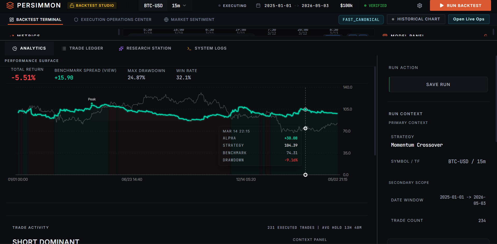
Presents key risk and performance indicators such as return, drawdown, win rate, Sharpe Ratio, and trade outcome quality.
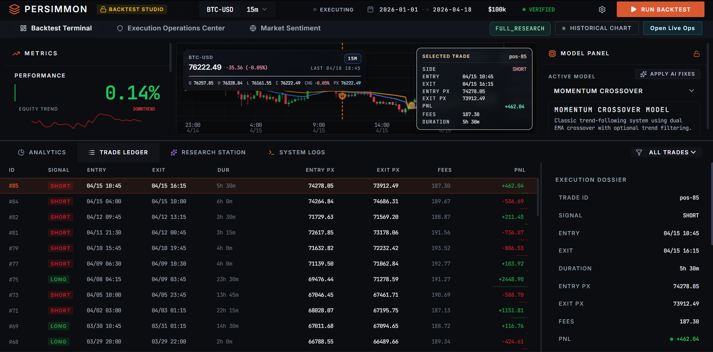
Demonstrates order-level evidence, trade reconstruction, simulated fills, and the audit trail behind each backtest result.
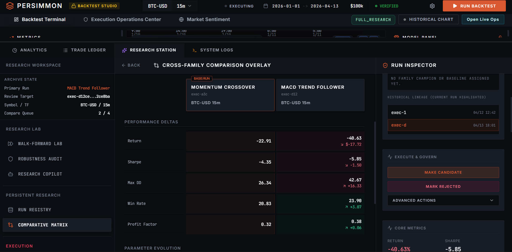
Shows saved experiments, run comparison, research workflow continuity, and AI-assisted interpretation surfaces.
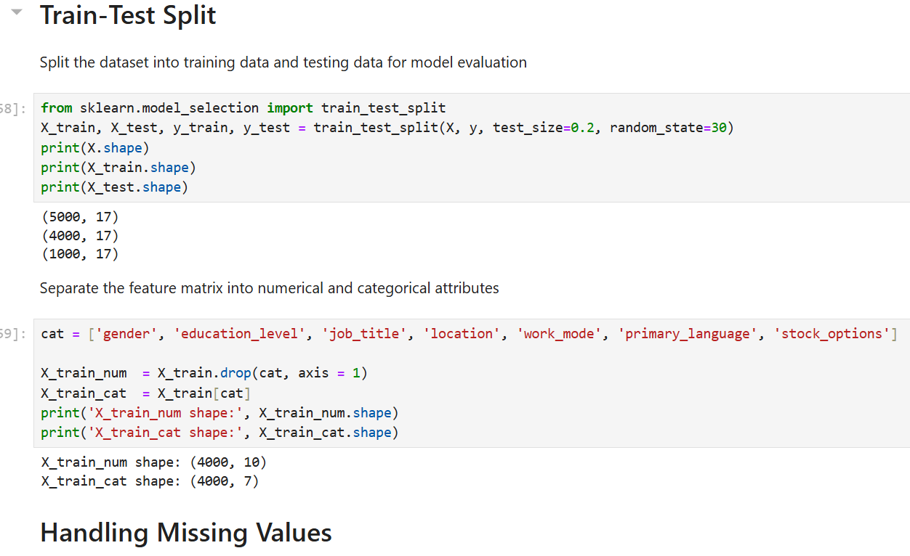
Shows dataset preparation, feature engineering, model training flow, and the structure of the machine-learning workflow.
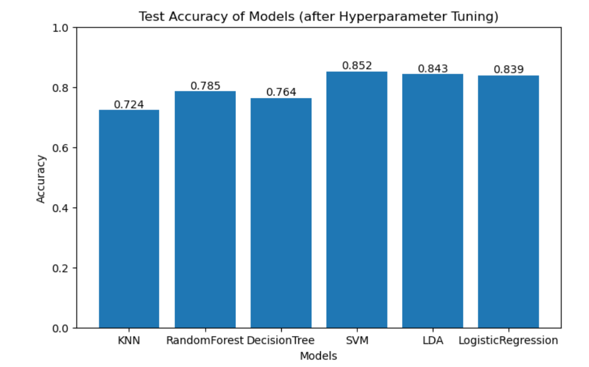
Presents classification results, model comparison, F1 Score, Precision, Recall, confusion matrix, and final prediction output.
05 / Technical Stack
I am strongest where machine learning meets implementation: data preparation, model evaluation, API integration, browser-side performance, and clean product interfaces. My current direction is to grow into an AI engineer who can ship reliable, explainable, production-aware systems.
Relative strengths based on current project work, coursework, internship exposure, and certifications.
06 / Education & Credentials
My academic path is focused on AI, data science, machine learning, deep learning, database systems, cloud computing, and software engineering fundamentals. The certifications reinforce that direction with vendor-backed AI, cloud, data, and database foundations.
07 / Certification Gallery
Certification evidence supporting my AI, data science, cloud, database, and software development foundation across Oracle and AWS learning paths.
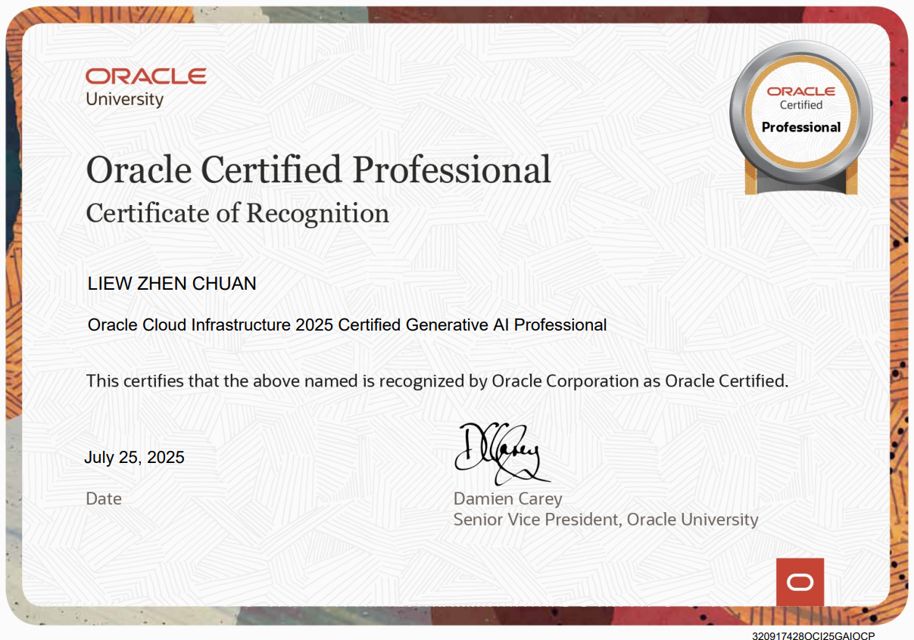
Validates applied understanding of generative AI concepts, prompt-driven workflows, and AI solution awareness.
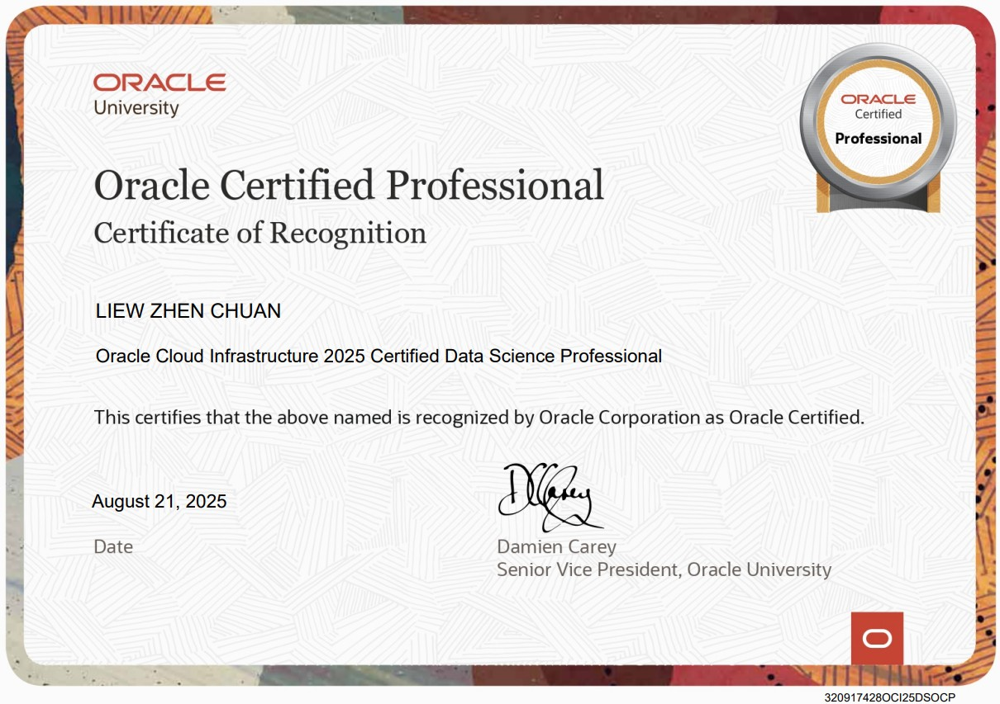
Supports my foundation in data science workflow, model development concepts, and analytical problem solving.
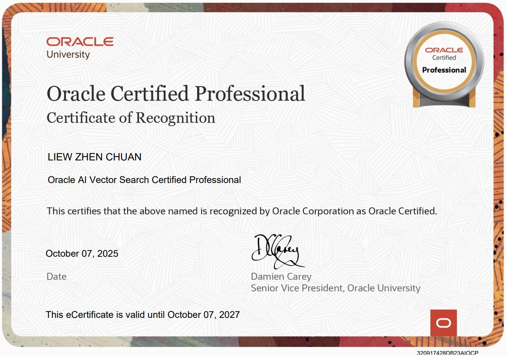
Shows exposure to vector-based retrieval concepts, semantic search, and AI-ready database capabilities.
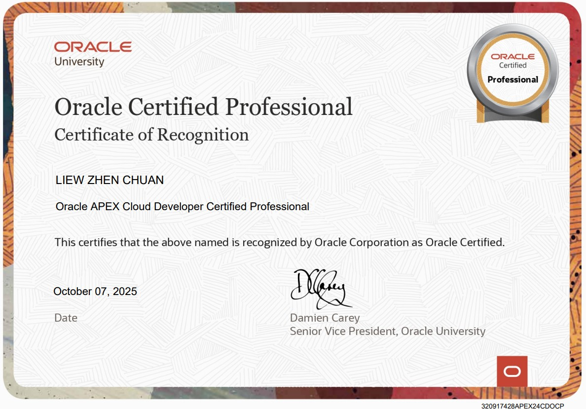
Demonstrates low-code cloud application development awareness and database-backed application delivery.
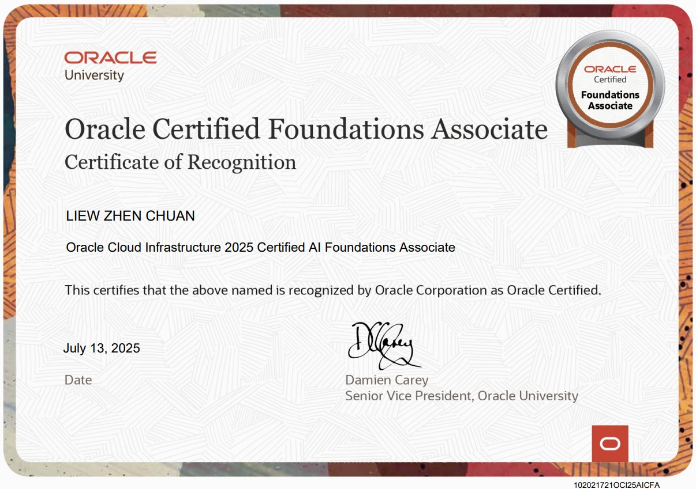
Strengthens my baseline understanding of AI concepts, use cases, and responsible implementation considerations.
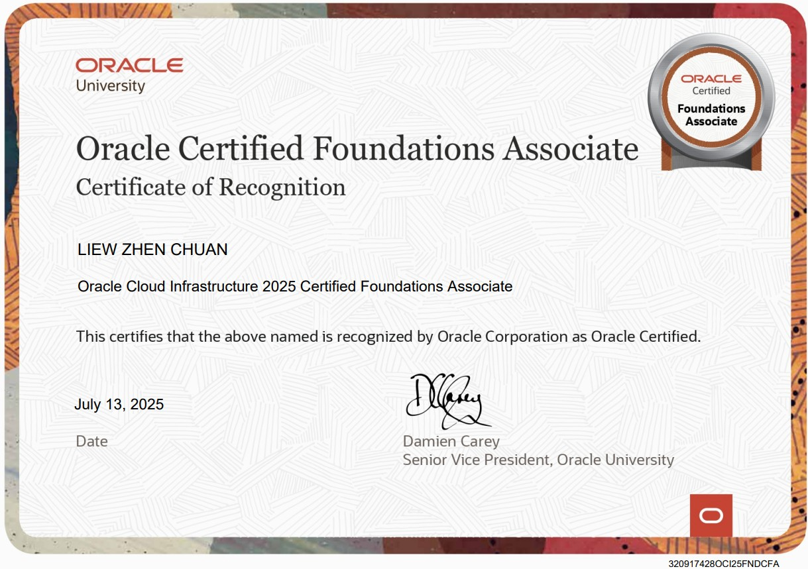
Covers modern data platform fundamentals, database services, and cloud-based data management concepts.
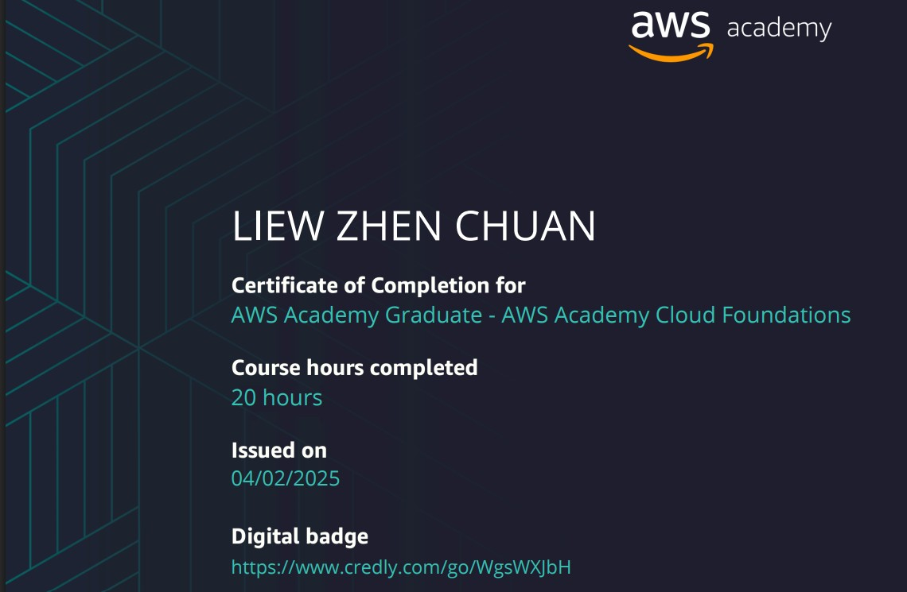
Covers cloud computing fundamentals, infrastructure concepts, and service-level awareness for modern application deployment.
08 / Contact
I am seeking Graduate AI Engineer, Data Scientist, or Software Engineer opportunities where I can work on applied AI, data systems, LLM integration, and production-grade software architecture.